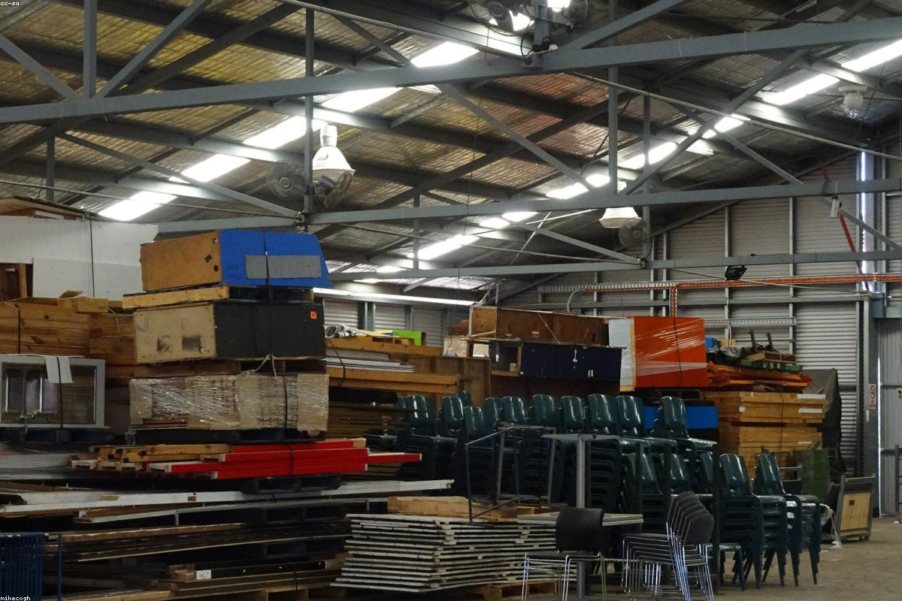
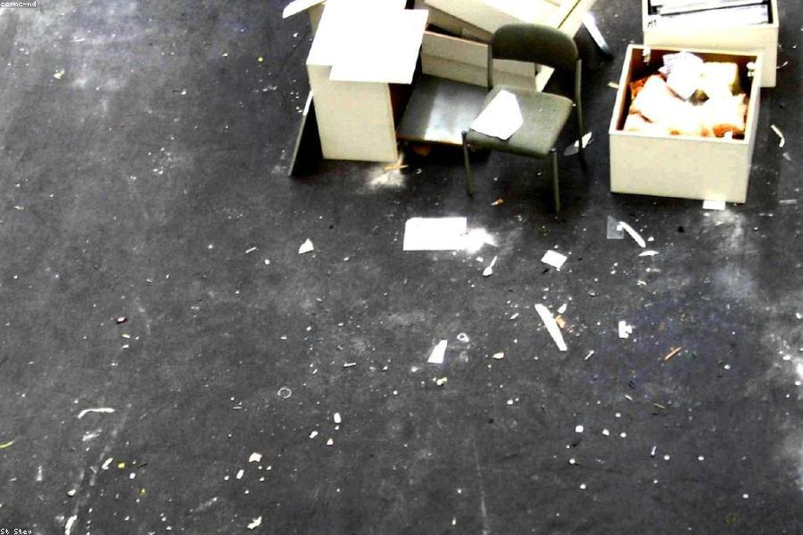
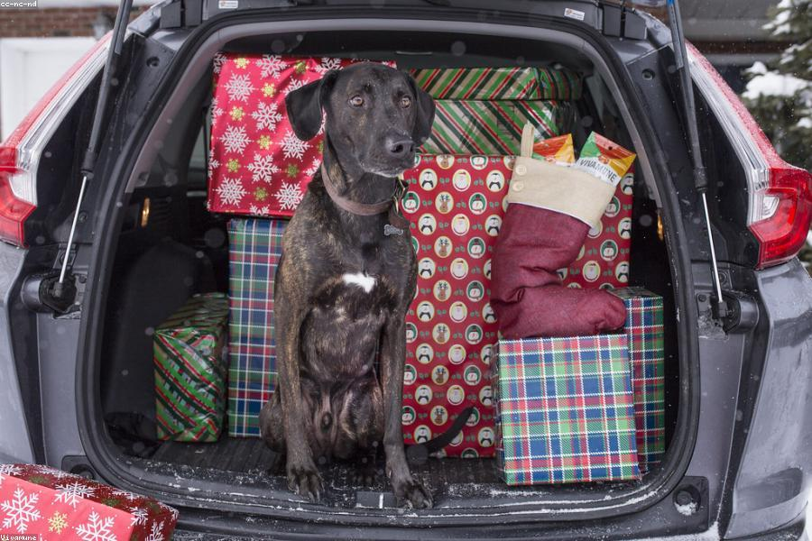

THE ULTIMATE 8-WEEK
PACKING CHECKLIST.
Don't let the chaos of moving overwhelm you. Our comprehensive step-by-step guide ensures every crate is packed and every detail is managed two months before the truck arrives.
Explore Our Guides

How to Pack Fragile Items for Long-Distance Transit
Learn professional methods to cushion fragile belongings during long-haul transportation.
Read Article →
Moving with Pets: Reducing Stress for Your Fur Friends
Keep routines steady and reduce anxiety for pets before, during, and after the move.
Read Article →Office Relocation Tips: Minimizing Business Downtime
A guide for smoothly managing corporate relocation while maintaining business operations.
Read Article →The First 24 Hours: Essential Unpacking Priorities
Focus on utilities, essentials, and room setup first so move-in day stays calm and controlled.
Read Article →Red Flags to Watch For When Hiring a Moving Company
Understand common warning signs and how to verify a mover before you book.
Read Article →The Hidden Costs of Moving and How to Budget
Plan for deposits, supplies, access fees, and service upgrades before they become surprises.
Read Article →The Ultimate 8-Week Packing Checklist
The easiest way to make moving day feel manageable is to spread the work across the weeks before the truck arrives. Eight weeks out, start by collecting quotes, confirming your moving date, and creating a room-by-room inventory. This is also the right time to begin sorting what you want to keep, donate, sell, or throw away. The fewer unnecessary items you carry into the new home, the easier every later step becomes.
At the six-week mark, gather packing supplies and begin boxing up non-essential items such as seasonal clothes, extra linens, decor, books, and rarely used kitchenware. Label every box with the room name plus two short notes: what is inside and whether it is fragile. Four weeks before the move, notify utility companies, update your address with banks and subscriptions, and schedule time off work if needed. This is also a smart point to arrange childcare or pet care for moving day.
In the final two weeks, pack daily-use items separately, confirm elevator or building access if you live in an apartment, and prepare an essentials bag with chargers, medication, documents, toiletries, and one change of clothes. The day before the move, defrost the fridge, unplug appliances, check drawers and cupboards, and keep valuables with you. A structured checklist reduces last-minute panic and helps your movers work faster because everything is packed, labeled, and ready to load.
How to Pack Fragile Items for Long-Distance Transit
Fragile items need more than bubble wrap. Start with the right box size so there is enough room for padding without leaving empty gaps that allow movement in transit. Wrap each item individually using packing paper first, then add bubble wrap or soft cushioning around the outside. Plates should be packed vertically like records, glasses should be filled with paper before wrapping, and electronics should have cables removed and sealed in labeled bags.
The next step is layering. Add a cushion base to the box, place the heaviest fragile items at the bottom, and keep similar materials together. Never let glass, ceramic, or metal surfaces touch directly. Use dividers for stemware and smaller ornaments, and fill any remaining space with crumpled paper or foam so the load stays tight during long-distance road vibration.
Finally, label clearly and be specific. Instead of writing only fragile, note details such as glassware, mirror, monitor, or lampshade. If an item is especially valuable or sentimental, keep it in your own vehicle if possible. Good packing is about impact control, but it is also about making handling decisions easier for everyone who touches the box during the move.
Moving with Pets: Reducing Stress for Your Fur Friends
Pets feel change long before the boxes leave the house. The best way to lower their stress is to protect routine as much as possible. Feed them at normal times, keep walks consistent, and avoid packing their toys, bedding, and bowls until the very end. If your pet gets nervous around noise or strangers, create one quiet room on moving day where they can stay with familiar items away from the main activity.
For the trip itself, prepare a pet essentials kit that includes food, water, medication, cleanup supplies, treats, and vaccination records. Cats and smaller dogs should travel in secure carriers, while larger dogs may need a harness restraint. If you are moving long distance, map out rest stops ahead of time and never assume your new accommodation is immediately pet-ready. Check fencing, hazards, and escape points before allowing them to roam.
After arrival, reintroduce space gradually. Start with one room, unpack their familiar belongings first, and spend extra time with them during the first few days. Animals settle faster when their people stay calm, so a well-planned move helps your pets feel safe even when everything around them is changing.
Office Relocation Tips: Minimizing Business Downtime
A successful office move starts with leadership deciding what cannot stop. Identify mission-critical systems first, such as internet service, phones, payment systems, servers, and client communication channels. Once those priorities are clear, build the move around them. Assign one internal coordinator, make department leads responsible for their own packing zones, and create a detailed moving calendar with deadlines for labeling, IT shutdown, furniture disassembly, and workstation setup.
Communication matters just as much as logistics. Staff should know when they need to pack personal items, clients should be informed about any temporary service changes, and vendors should receive the new address early. Label every workstation by employee name and destination area. For shared equipment, use a clear asset list so nothing gets misplaced during transport.
If possible, move in phases. Weekend or after-hours relocations reduce lost business time, and a staged reopening lets your team test internet, printers, access cards, and meeting spaces before normal operations resume. The smoother your preparation, the less your customers feel the move happened at all.
The First 24 Hours: Essential Unpacking Priorities
The first day in a new home should focus on function, not perfection. Start with beds, basic bathroom items, toiletries, phone chargers, and a simple kitchen setup. You do not need to unpack every decorative box immediately. What matters is making the home livable before everyone gets too tired to think clearly.
Next, check utilities and safety. Confirm the power, water, internet, and hot water are working. Locate the circuit breaker, water shutoff, and smoke alarms. If you moved with children or pets, secure any dangerous areas before opening all boxes. A quick walk-through early on can prevent small issues from turning into stressful surprises late at night.
Once the basics are in place, prioritize one room at a time. Usually the kitchen and bedrooms bring the fastest feeling of order. Breaking the work into zones keeps the new home from feeling chaotic and helps you build momentum without burning out on day one.
Red Flags to Watch For When Hiring a Moving Company
A low quote is not always a good quote. One of the biggest warning signs is a mover that gives a vague estimate without asking enough questions about access, distance, inventory, stairs, or special items. Reliable movers want details because accurate planning protects both sides. Another red flag is poor communication, especially when phone calls go unanswered or written quotes are delayed, incomplete, or inconsistent.
Always check whether the company has a physical business presence, real reviews, and transparent terms around deposits, cancellations, and liability. Be cautious if a mover demands a large cash-only payment upfront or avoids giving clear paperwork. You should know what is included, what may cost extra, and how claims are handled if something is damaged.
Trust your instincts during the booking process. Professional movers tend to be organized before the move even begins. If the company sounds rushed, evasive, or careless during quoting, those same problems usually show up on moving day.
The Hidden Costs of Moving and How to Budget
Many moving budgets fail because they only include truck or labor charges. In reality, the final total can also include packing materials, storage, cleaning, utility connection fees, elevator bookings, parking permits, furniture assembly, and time off work. If your move involves access challenges such as stairs, narrow hallways, or long carrying distances, those can also affect labor time and cost.
A practical budget separates fixed costs from variable costs. Fixed costs include your booked moving service, deposits, and any known travel or lease expenses. Variable costs include extra boxes, food on moving day, cleaning products, fuel, and last-minute purchases for the new place. Build a small contingency fund as well, because moves nearly always include at least one surprise expense.
The easiest way to stay in control is to track spending from the first quote, not from moving day. Keep one list with all expected charges, due dates, and payment confirmations. When you can see the full picture early, you make better decisions and avoid the stress of hidden costs appearing all at once.
Ready to Put the Tips into Action?
Now that you're an expert in the roadmap, let us handle the heavy lifting for you.
Start Your Free Quote